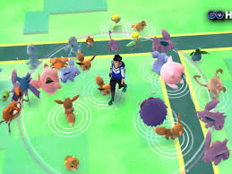
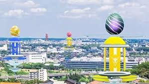
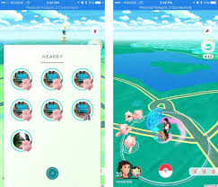

|
The Popular Teams and Gym Strats
|
-
The majority of the Teams here are red and yellow. The main reason for this being that there are several avid Pokemon
Go players that hog these gyms. The best time to try and get a spot in the gym is during the morning at around 9 or 10, as
the pokemon in the gym will be weak and easy to knock out, but it is not advised to try and knock out a pokemon with
half or more health, as more likely than not, the Pokemon owner will revive the pokemon or will come and knock out your pokemon
from the gym soon after.
-
Reports of gyms being taken over as early as 4 in the morning have been reported, so be careful when taking over gyms, as your efforts
may be for naught.
-
Pokemon commonly seen in these gyms include Slaking, Blissy, Chansey and Metagross
|
|
Popular Spawn Locations

|
-
Target --> With a gym and several pokestops within the vicinity, there are many pokemon who spawned here. Pokemon such as Tyranitar have
been spotted here occasionally
-
Church --> Only a single gym and no stops, but the number of pokemon that spawn here are quite numerous.
The Pokemon respawn quite fast, so you can spend a while here catching pokemon.
|
|
Raid Times and Locations

|
-
Raids will usually not happen during the early morning to afternoon. It is mainly during the night or late afternoon when raids happen,
as a majority of the people who play Pokemon Go in this region are working adults. Raid hours are popular here and start at either the Target or the
Church and go from there.
-
The Church --> This is a very popular spot to raid, as there is a parking lot for people to raid at,
and the gym is close to multiple other gyms to raid at after the raid at the church. There are many people who live nearby, which
also makes this a popular raiding location
-
The Park Memorial and Park sign --> Being 2 gyms that are close to each other, many times there will be many cars parked
here to raid in these gyms. Being close to Target, the Church, and also the other park sign, having many people who live nearby, while also being in a nest make these
2 gyms quite popular for raiding.
-
Target --> Being near a highway where many people go to or come from work, this location is very popular for raids. There are also many people
shopping here as well, which brings in many people for raids. The nearby gyms, the many people who live nearby, and the popularity
of the target all make this location a popular spot.
-
Lions Park --> A new gym, this raiding location is not as popular as the others listed, but still shows many people
raiding here, as seen by the multiple number of cars here during raid hour.
|
|
Pokemon Nests

|
-
Hamel Legion Park --> This nest includes the entire park, but does not include the church
or any of the stops nearby the park, such as the post office, the bar, or the library. Has decent spawns,
but most of the spawns are at the baseball memorial, the bench memorial, and the cluster of gyms and stops near the entrance
of the park.
-
Lions Park --> This nest is quite small, but a gym and a stop were just added recently. The number of spawns are decent
for the size of the nest, but should only be visited for short periods of time,
since the spawns in short periods of time are small.
-
Nature Park --> Extremely small nest, only 1 stop. Can be something you pass by on the way home or something, but
not a nest to go out of your way for.
|
|
Frequent Players
|
-
RenChan
-
PikaBits
-
ReaperRuler
-
Ksw
-
ZengStar
|